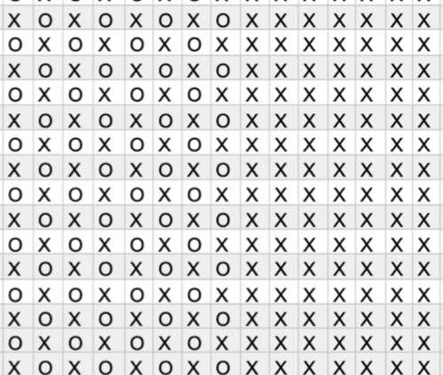

Perlestrik er et populært mønster at strikke, da det skaber en god dynamik i dit arbejde. Det ser mere avanceret ud end det egentlig er, og derfor kan det afholde mange til ikke at springe ud i det. Det du skal kunne er, ret- og vrangmasker, hvilket er to nemme masker, som mange starter med at lære. Her er en guide til, hvordan du kommer videre med dit strik i mønstrene. Perlestrik er ligesom når du strikker en ribkant, nemlig ret og vrang. I perlestrik strikker du dem forskudt af hinanden, det vil sige, at et mønster løber over 2 pinde, som også vises i diagrammet. Når du har strikket nogle runder, kommer det bedre til udtryk i dit arbejde. Hvis du vil have inspiration til nogle opskrifter, der bruger den teknik du lige har lært, kan du klikke her
Tern er også en god teknik til at skabe noget spil i dit arbejde. Her skal du også anvende i ret- og vrangmasker.
Det du gør er, eksempelvis at strikke 5 retmasker og 5 vrangmasker hele vejen rundt, og det gør du i eksempelvis 6 runder. Hvilket også vises i diagrammet nedenunder.
Når du er færdig med dine 6 runder, er det tid til at skabe ternene. Her bytter du rundt og starter med 5 vrangmasker over dine 5 retmasker, og kører videre med 5 retmasker over dine 5 vrangmasker. Efter nogle pinde bliver mønsteret synligt.
 Hvis du vil have inspiration til nogle opskrifter, der bruger den teknik du lige har lært, kan du klikke her
Hvis du vil have inspiration til nogle opskrifter, der bruger den teknik du lige har lært, kan du klikke her
Perlestrik og tern er to nemme mønstre, at skabe succes i, og med lidt øvelse og tålmodighed kan disse kombineres. For at kombinere disse to mønstre, skal du skrikke perlestrik i det ene ternfelt, eksempelvis vrangfeltet. SÅ ender du op med ternfelter af skiftevis retmasker og perlestrik. Dette skaber også en virkelig fin dynamik i dit arbejde, og ser mere avanceret ud end hvad det er.  Hvis du vil have inspiration til nogle opskrifter, der bruger den teknik du lige har lært, kan du klikke her